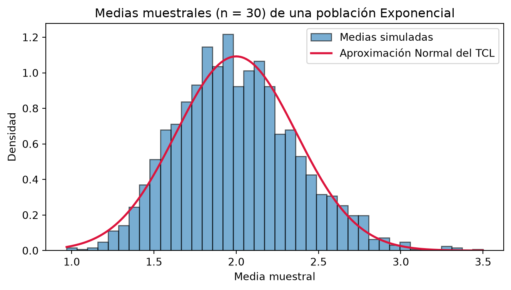
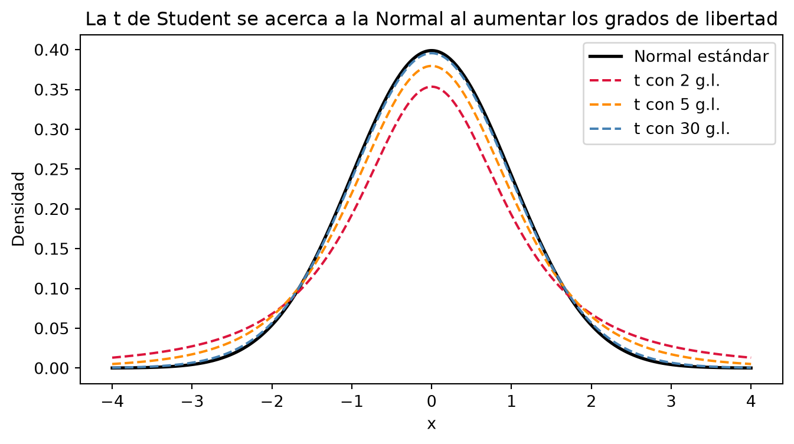

flowchart TD
A[Variable Aleatoria X] --> B[Discreta]
A --> C[Continua]
B --> B1[Bernoulli]
B --> B2[Binomial]
B --> B3[Poisson]
C --> C1[Uniforme]
C --> C2[Normal]
C --> C3[Exponencial]
7 Distribuciones de Probabilidad
NotaObjetivos del módulo
- Distinguir variables aleatorias discretas y continuas y sus funciones de masa, de densidad y de distribución.
- Reconocer las distribuciones Bernoulli, Binomial, Poisson, Uniforme, Normal y Exponencial y sus parámetros.
- Calcular probabilidades y cuantiles, y tipificar valores de una Normal.
- Entender la distribución muestral de la media y el Teorema Central del Límite.
- Conocer las distribuciones t, χ² y F que se usan en los módulos de inferencia.
7.1 Introducción
En el Módulo 2 definimos la probabilidad de sucesos individuales y vimos cómo actualizar nuestras creencias con el teorema de Bayes. Ahora damos un paso más: en vez de asignar probabilidades a sucesos sueltos, queremos describir el comportamiento completo de una variable aleatoria — todos sus valores posibles y la probabilidad asociada a cada uno.
Esto es lo que hace una distribución de probabilidad: un modelo matemático que resume de forma compacta cómo se reparte la probabilidad a lo largo de todos los resultados posibles de una variable aleatoria \(X\).
Como en los módulos anteriores, cerraremos con el puente hacia lo que viene después: el Teorema Central del Límite, la pieza que conecta las distribuciones de este módulo con la inferencia estadística (intervalos de confianza y contraste de hipótesis) del próximo módulo.
7.2 Variables Aleatorias: Discretas vs. Continuas
Recuperamos la distinción del Módulo 1 entre variables discretas y continuas, pero ahora aplicada a variables aleatorias — variables cuyo valor depende del resultado de un experimento aleatorio.
La diferencia clave está en cómo se distribuye la probabilidad:
- Discreta: la probabilidad se concentra en puntos aislados. Se describe con una función de masa de probabilidad (pmf), \(P(X = x)\).
- Continua: la probabilidad se reparte a lo largo de un intervalo continuo. Se describe con una función de densidad de probabilidad (pdf), \(f(x)\), donde \(P(X = x) = 0\) para cualquier valor puntual, y solo tienen sentido probabilidades sobre intervalos: \(P(a \le X \le b) = \int_a^b f(x)\,dx\).
En ambos casos, dos cantidades resumen la distribución:
\[ E[X] = \mu \qquad \text{(esperanza o valor esperado)} \]
\[ \text{Var}(X) = \sigma^2 = E[(X-\mu)^2] \qquad \text{(varianza)} \]
7.3 Distribuciones Discretas
7.3.1 Bernoulli
Modela un único experimento con dos resultados posibles: éxito (1) o fracaso (0), con probabilidad de éxito \(p\).
\[ P(X = x) = p^x (1-p)^{1-x}, \quad x \in \{0, 1\} \]
\[ E[X] = p \qquad \text{Var}(X) = p(1-p) \]
Ejemplo: si \(p = 0{,}3\) es la probabilidad de que un cliente convierta tras ver un anuncio, \(X\) es la variable que vale 1 si convierte y 0 si no.
7.3.2 Binomial
Cuenta el número de éxitos en \(n\) ensayos de Bernoulli independientes con la misma \(p\).
\[ P(X = k) = \binom{n}{k} p^k (1-p)^{n-k}, \quad k = 0, 1, \dots, n \]
\[ E[X] = np \qquad \text{Var}(X) = np(1-p) \]
Ejemplo: de 50 clientes que ven el anuncio, ¿cuántos convertirán? \(X \sim \text{Binomial}(n=50, p=0{,}3)\).
Código
from stats_toolkit import distributions as dist
# Probabilidad de que exactamente 15 de 50 clientes conviertan
p_15 = dist.binomial_pmf(k=15, n=50, p=0.3)
print(f"P(X = 15) = {p_15:.4f}")P(X = 15) = 0.12237.3.3 Poisson
Modela el número de eventos que ocurren en un intervalo fijo de tiempo o espacio, cuando esos eventos ocurren de forma independiente a una tasa media constante \(\lambda\).
\[ P(X = k) = \frac{\lambda^k e^{-\lambda}}{k!}, \quad k = 0, 1, 2, \dots \]
\[ E[X] = \lambda \qquad \text{Var}(X) = \lambda \]
Ejemplo: si un servidor recibe en media \(\lambda = 4\) peticiones fallidas por minuto, ¿cuál es la probabilidad de que reciba exactamente 6 en el próximo minuto?
Código
p_6 = dist.poisson_pmf(k=6, lam=4)
print(f"P(X = 6) = {p_6:.4f}")P(X = 6) = 0.1042La Poisson es, de hecho, el límite de la Binomial cuando \(n \to \infty\), \(p \to 0\) y \(np = \lambda\) se mantiene constante — útil cuando hay muchas oportunidades de que ocurra un evento raro.
7.4 Distribuciones Continuas
7.4.1 Uniforme
La probabilidad se reparte de forma homogénea en un intervalo \([a, b]\): subintervalos de la misma longitud tienen la misma probabilidad.
\[ f(x) = \frac{1}{b-a}, \quad a \le x \le b \]
\[ E[X] = \frac{a+b}{2} \qquad \text{Var}(X) = \frac{(b-a)^2}{12} \]
7.4.2 Normal (Gaussiana)
La distribución continua más importante en estadística, por su papel central en el Teorema Central del Límite (lo vemos al final de este módulo).
\[ f(x) = \frac{1}{\sigma\sqrt{2\pi}} e^{-\frac{(x-\mu)^2}{2\sigma^2}} \]
\[ E[X] = \mu \qquad \text{Var}(X) = \sigma^2 \]
Es simétrica alrededor de \(\mu\), y la conocida “regla 68-95-99,7” indica que aproximadamente el 68% de la probabilidad cae dentro de \(\pm 1\sigma\), el 95% dentro de \(\pm 2\sigma\), y el 99,7% dentro de \(\pm 3\sigma\).
Código
# Probabilidad acumulada P(X <= 1.96) para una Normal estándar
p = dist.normal_cdf(x=1.96, mu=0, sigma=1)
print(f"P(X <= 1.96) = {p:.4f}")P(X <= 1.96) = 0.97507.4.3 Exponencial
Modela el tiempo de espera hasta que ocurre el siguiente evento en un proceso de Poisson con tasa \(\lambda\). Es el “primo continuo” de la Poisson.
\[ f(x) = \lambda e^{-\lambda x}, \quad x \ge 0 \]
\[ E[X] = \frac{1}{\lambda} \qquad \text{Var}(X) = \frac{1}{\lambda^2} \]
Ejemplo: si los tickets de soporte llegan a una tasa de \(\lambda = 4\) por hora (Poisson), el tiempo entre tickets consecutivos sigue una Exponencial con \(E[X] = 1/4\) horas = 15 minutos.
7.5 Función de distribución, cuantiles y tipificación
7.5.1 Función de distribución
La función de distribución (o función de distribución acumulada, cdf) de cualquier variable aleatoria es
\[ F(x) = P(X \le x). \]
Crece de 0 a 1 a medida que \(x\) aumenta y sirve para calcular la probabilidad de cualquier intervalo: \(P(a < X \le b) = F(b) - F(a)\). En una variable discreta, \(F(x)\) suma las probabilidades de los valores menores o iguales que \(x\); en una continua, es el área bajo la densidad a la izquierda de \(x\).
7.5.2 Cuantiles
El cuantil de orden \(p\) es el valor \(q_p\) que deja por debajo una probabilidad \(p\): \(F(q_p) = p\) (en las distribuciones continuas). La mediana es \(q_{0{,}5}\). En inferencia usaremos mucho los cuantiles de la Normal estándar: por ejemplo, \(z_{0{,}975} \approx 1{,}96\) deja un 2,5 % de probabilidad en la cola derecha y, por simetría, otro 2,5 % por debajo de \(-1{,}96\).
Código
from scipy import stats
print(f"P(Z <= 1,96) = {dist.normal_cdf(1.96):.4f}")
print(f"Cuantil 0,975 = {stats.norm.ppf(0.975):.4f}")
print(f"P(-1,96 < Z <= 1,96) = {dist.normal_cdf(1.96) - dist.normal_cdf(-1.96):.4f}")P(Z <= 1,96) = 0.9750
Cuantil 0,975 = 1.9600
P(-1,96 < Z <= 1,96) = 0.9500La función de distribución y la función cuantil son inversas: normal_cdf convierte un valor en probabilidad, y stats.norm.ppf convierte una probabilidad en valor.
7.5.3 Tipificación
Si \(X \sim \mathcal{N}(\mu, \sigma^2)\), la variable tipificada
\[ Z = \frac{X - \mu}{\sigma} \]
sigue una Normal estándar, \(\mathcal{N}(0, 1)\). Tipificar expresa cada valor como “a cuántas desviaciones típicas está de la media”, lo que permite usar una sola tabla (o una sola función) para cualquier Normal. Por ejemplo, si la estatura de una población sigue una \(\mathcal{N}(170, 8^2)\) en centímetros, medir 186 cm equivale a \(z = (186 - 170)/8 = 2\):
Código
z = (186 - 170) / 8
print(f"z = {z:.1f}")
print(f"P(X > 186) = P(Z > 2) = {1 - dist.normal_cdf(z):.4f}")
print(f"Directamente: {1 - dist.normal_cdf(186, mu=170, sigma=8):.4f}")z = 2.0
P(X > 186) = P(Z > 2) = 0.0228
Directamente: 0.02287.6 Distribución muestral de la media
En inferencia no nos interesa una sola observación, sino un resumen de la muestra, como la media \(\bar{X}\). Como la muestra es aleatoria, \(\bar{X}\) también lo es: cada muestra da una media distinta. Su distribución se llama distribución muestral de la media. Si \(X_1, \dots, X_n\) son independientes y proceden de una población con media \(\mu\) y varianza \(\sigma^2\), entonces
\[ E[\bar{X}] = \mu, \qquad \text{Var}(\bar{X}) = \frac{\sigma^2}{n}, \qquad \text{desviación típica de } \bar{X} = \frac{\sigma}{\sqrt{n}}. \]
Es decir, la media muestral se centra en la media poblacional y su dispersión disminuye al crecer \(n\). A esa desviación típica, \(\sigma/\sqrt{n}\), la llamaremos error estándar en el Módulo 4. Si además la población es Normal, \(\bar{X}\) sigue exactamente una \(\mathcal{N}(\mu, \sigma^2/n)\) para cualquier \(n\). Si no lo es, el resultado de la sección siguiente nos dice qué ocurre cuando \(n\) es grande.
7.7 El Teorema Central del Límite
Este es, posiblemente, el resultado más importante de toda la estadística inferencial, y el motivo por el que la distribución Normal aparece constantemente incluso cuando los datos originales no son normales.
La idea intuitiva es esta: cada observación puede quedar lejos de la media de la población, pero al promediar muchas, los valores altos y bajos tienden a compensarse. Por eso las medias muestrales se agrupan alrededor de \(\mu\), con una dispersión que disminuye al crecer \(n\) (su desviación típica es \(\sigma/\sqrt{n}\)) y con una forma cada vez más parecida a la de una Normal.
Teorema Central del Límite (TCL): sean \(X_1, \dots, X_n\) observaciones independientes e idénticamente distribuidas (i.i.d.) de una población con media \(\mu\) y varianza \(\sigma^2\) finita y positiva (\(0 < \sigma^2 < \infty\)). Entonces, la media muestral tipificada converge en distribución a una Normal estándar:
\[ Z_n = \frac{\bar{X} - \mu}{\sigma/\sqrt{n}} \;\xrightarrow{\;d\;}\; \mathcal{N}(0, 1) \quad \text{cuando } n \to \infty. \]
En la práctica, para \(n\) suficientemente grande, la distribución de \(\bar{X}\) puede aproximarse por \(\mathcal{N}\left(\mu, \sigma^2/n\right)\) (Moore et al. 2012).
Hay que tipificar porque \(\bar{X}\), por sí sola, no tiende a una Normal: al crecer \(n\) se concentra cada vez más en torno a \(\mu\). Lo que se estabiliza es su forma una vez centrada y reescalada. Las condiciones i.i.d. y varianza finita y positiva son suficientes para que el resultado se cumpla, pero no las únicas posibles: hay versiones del teorema que las relajan y que quedan fuera de este curso.
Lo notable es que el límite no depende de la forma de la población: puede ser una Exponencial muy asimétrica, una Uniforme o cualquier otra con varianza finita. Lo que sí depende de la forma es qué significa «suficientemente grande»: con poblaciones simétricas la aproximación es buena con pocas observaciones, y con poblaciones muy asimétricas o con valores extremos hacen falta muestras mayores. La regla habitual \(n \ge 30\) es solo orientativa.
Podemos verlo empíricamente simulando muchas muestras de una población muy asimétrica (una Exponencial) y observando cómo se distribuyen sus medias muestrales:
Código
import matplotlib.pyplot as plt
import numpy as np
sample_means = dist.simulate_clt(
population="exponential",
population_params={"lam": 0.5},
sample_size=30,
n_samples=2000,
seed=42,
)
# La población Exponencial(λ = 0,5) tiene μ = 1/λ = 2 y σ = 1/λ = 2
mu, sigma, n = 2, 2, 30
xs = np.linspace(sample_means.min(), sample_means.max(), 200)
plt.figure(figsize=(8, 4))
plt.hist(sample_means, bins=40, density=True, edgecolor="black", alpha=0.6,
label="Medias simuladas")
plt.plot(xs, [dist.normal_pdf(x, mu, sigma / np.sqrt(n)) for x in xs],
color="crimson", linewidth=2, label="Aproximación Normal del TCL")
plt.title("Medias muestrales (n = 30) de una población Exponencial")
plt.xlabel("Media muestral")
plt.ylabel("Densidad")
plt.legend()
plt.show()
Aunque la población original (Exponencial) es muy asimétrica, la distribución de las medias muestrales ya tiene una forma de campana cercana a la Normal, aunque con \(n = 30\) todavía conserva una ligera asimetría a la derecha. Esto es lo que hace posible, en el próximo módulo, construir intervalos de confianza y contrastes de hipótesis sobre la media de muchas poblaciones no normales, siempre que las observaciones sean independientes y la muestra sea lo bastante grande.
7.7.1 Explora: la aproximación Normal a la Binomial
Una Binomial\((n, p)\) es la suma de \(n\) variables Bernoulli independientes, así que, por el TCL, para \(n\) grande se parece a una Normal con la misma media, \(np\), y la misma varianza, \(np(1-p)\). Mueve los controles para ver cuándo la aproximación es buena: mejora al aumentar \(n\) y empeora cuando \(p\) se acerca a 0 o a 1, porque la Binomial se vuelve asimétrica. Una regla práctica habitual pide que \(np\) y \(n(1-p)\) sean al menos 10 (algunos textos se conforman con 5).
AdvertenciaGráfico interactivo
Este gráfico se genera en el navegador y necesita JavaScript y conexión a internet para cargar sus bibliotecas. Si este aviso no desaparece en unos segundos, no se han podido cargar: el resto del capítulo no depende del gráfico, y los mismos cálculos aparecen en el texto y en el código de la sección.
7.8 Distribuciones derivadas de la Normal: t, χ² y F
Los métodos de los módulos siguientes usan tres distribuciones que se construyen a partir de variables normales. No hace falta memorizar sus fórmulas; basta con saber de dónde salen, qué forma tienen y para qué se usan.
- Chi-cuadrado con \(k\) grados de libertad, \(\chi^2_k\): la suma de los cuadrados de \(k\) variables \(\mathcal{N}(0,1)\) independientes. Solo toma valores positivos y es asimétrica a la derecha. Aparece en el contraste de una varianza (Módulo 4) y en los contrastes chi-cuadrado (Módulo 6).
- t de Student con \(k\) grados de libertad, \(t_k\): el cociente \(Z / \sqrt{\chi^2_k / k}\), con \(Z\) y \(\chi^2_k\) independientes. Es simétrica como la Normal, pero con colas más pesadas, y se parece cada vez más a ella al crecer \(k\). Se usa para las medias cuando \(\sigma\) es desconocida (Módulo 4) y para la pendiente de una regresión (Módulo 5).
- F de Snedecor con \((k_1, k_2)\) grados de libertad: el cociente de dos chi-cuadrado independientes divididas por sus grados de libertad. Solo toma valores positivos. Es la distribución del estadístico del ANOVA (Módulo 6).
Código
xs = np.linspace(-4, 4, 400)
plt.figure(figsize=(8, 4))
plt.plot(xs, stats.norm.pdf(xs), color="black", linewidth=2, label="Normal estándar")
for k, color in [(2, "crimson"), (5, "darkorange"), (30, "steelblue")]:
plt.plot(xs, stats.t.pdf(xs, k), color=color, linestyle="--", label=f"t con {k} g.l.")
plt.title("La t de Student se acerca a la Normal al aumentar los grados de libertad")
plt.xlabel("x")
plt.ylabel("Densidad")
plt.legend()
plt.show()
TipIdeas clave
- Una distribución de probabilidad describe todos los valores de una variable aleatoria y sus probabilidades.
- La función de distribución \(F(x) = P(X \le x)\) da probabilidades de intervalos; los cuantiles son su inversa.
- Tipificar, \(Z = (X-\mu)/\sigma\), reduce cualquier Normal a la Normal estándar.
- La media muestral tiene media \(\mu\) y desviación típica \(\sigma/\sqrt{n}\); por el TCL, para \(n\) grande es aproximadamente Normal.
- Las distribuciones t, χ² y F se construyen a partir de la Normal y son la base de los contrastes de los módulos 4 a 6.
7.9 Autoevaluación
Intenta responder cada pregunta antes de desplegar la respuesta.
1. Una centralita recibe de media 3 llamadas por hora, de forma independiente. ¿Qué distribución modela el número de llamadas en una hora y cuál es la probabilidad de que no llegue ninguna?
- Una Binomial con \(n = 3\) y \(p = 0{,}5\); \(P(X = 0) = 0{,}125\).
- Una Poisson con \(\lambda = 3\); \(P(X = 0) = e^{-3} \approx 0{,}050\).
- Una Normal de media 3; \(P(X = 0) \approx 0\).
- Una Poisson con \(\lambda = 3\); \(P(X = 0) = 1/3\).
TipRespuesta
Respuesta correcta: b. Una Poisson con \(\lambda = 3\). \(P(X = 0) = e^{-3} \approx 0{,}050\).
2. \(X \sim \mathcal{N}(100, 15^2)\). ¿Cuánto vale aproximadamente \(P(X > 130)\)?
- Aproximadamente 0,023.
- Aproximadamente 0,977.
- Aproximadamente 0,05.
- Aproximadamente 0,159.
TipRespuesta
Respuesta correcta: a. Tipificando, \(z = (130 - 100)/15 = 2\), y \(P(Z > 2) \approx 0{,}023\): algo más del 2 % de los valores supera 130.
3. Si \(X \sim \text{Binomial}(20;\ 0{,}5)\), ¿cuáles son su media y su varianza?
- Media 10 y varianza 10.
- Media 10 y varianza 2,24.
- Media 10 y varianza 5.
- Media 0,5 y varianza 0,25.
TipRespuesta
Respuesta correcta: c. \(E[X] = np = 10\) y \(\text{Var}(X) = np(1-p) = 5\) (desviación típica \(\sqrt{5} \approx 2{,}24\)).
4. ¿Dice el Teorema Central del Límite que, con una muestra grande, los datos siguen una distribución Normal?
- Sí: con una muestra grande, los datos pasan a seguir una distribución Normal.
- No: los datos conservan la distribución de la población; lo que se aproxima a una Normal es la distribución de la media muestral (tipificada).
- No: el teorema solo se aplica cuando la población ya es Normal.
TipRespuesta
Respuesta correcta: b. No. Los datos conservan la distribución de la población, sea cual sea. Lo que se aproxima a una Normal es la distribución de la media muestral (tipificada) cuando el tamaño de la muestra crece.
5. Los tickets de soporte llegan en promedio cada 15 minutos (proceso de Poisson). ¿Cuál es la tasa \(\lambda\) por hora y la probabilidad de esperar más de media hora hasta el siguiente?
- \(\lambda = 0{,}25\) por hora y \(P(T > 0{,}5) = e^{-0{,}125} \approx 0{,}88\).
- \(\lambda = 4\) por hora y \(P(T > 0{,}5) = 1 - e^{-2} \approx 0{,}865\).
- \(\lambda = 15\) por hora y \(P(T > 0{,}5) = e^{-7{,}5} \approx 0{,}0006\).
- \(\lambda = 4\) por hora y \(P(T > 0{,}5) = e^{-2} \approx 0{,}135\).
TipRespuesta
Respuesta correcta: d. \(\lambda = 4\) tickets por hora. El tiempo de espera es Exponencial y \(P(T > 0{,}5) = e^{-4 \cdot 0{,}5} = e^{-2} \approx 0{,}135\).
7.10 Cierre
En este módulo hemos pasado de sucesos individuales (Módulo 2) a variables aleatorias completas: sus distribuciones discretas (Bernoulli, Binomial, Poisson) y continuas (Uniforme, Normal, Exponencial), junto con sus medidas resumen (\(E[X]\), \(\text{Var}(X)\)). El Teorema Central del Límite cierra el módulo como puente formal hacia el Módulo 4, donde usaremos estas herramientas para hacer inferencia sobre poblaciones a partir de muestras.
Continúa con la práctica del módulo.
Moore, David S., George P. McCabe, y Bruce A. Craig. 2012. Introduction to the Practice of Statistics. 7.ª ed. W.H. Freeman; Company.